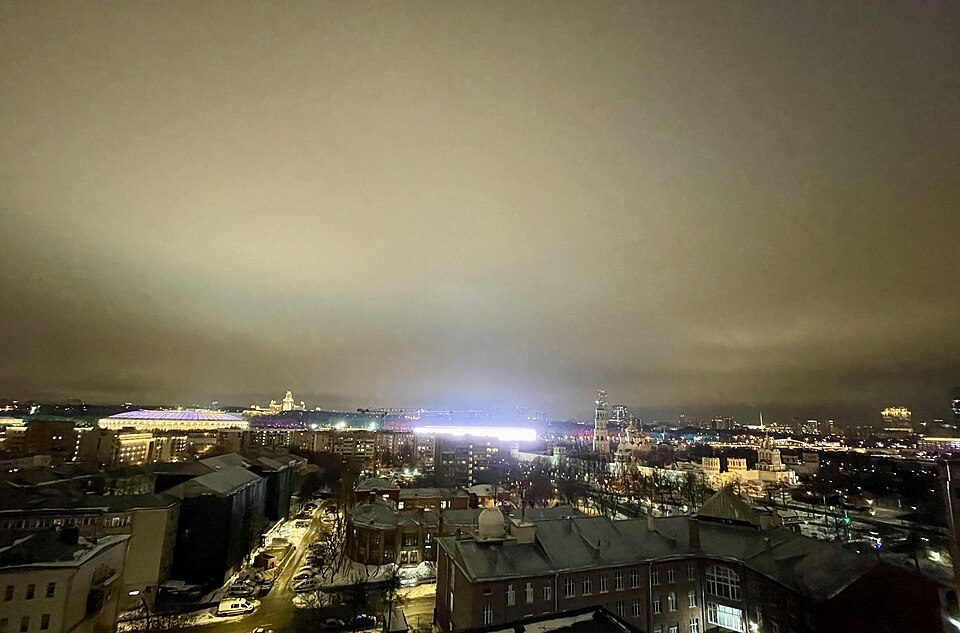

How to start stargazing
Practical tips for your first night under the stars: where to go, when to go out, what to take and what to look for.


Astronomy is one of the few sciences anyone can enjoy, and even contribute to, with barely any equipment. Here is how to get off to a good start.
Step by step
- Find darkness: get away from street lights and, if you can, from the city. Even a dark park or a rooftop with no direct lights makes a big difference.
- Pick the right night: ideally clear and moonless, or before the Moon rises. The days around new moon are best for faint stars.
- Let your eyes adjust: your pupils open within minutes, but full sensitivity takes 20 to 30 minutes. A single glance at a bright phone screen ruins it.
- Use red light: a red torch, or red cellophane over a normal one, lets you read a chart without losing your dark adaptation.
- Wrap up warm: even in summer, standing still at night gets cold.
- Take a map: free apps such as Stellarium show what is in each part of the sky when you point your phone. Turn on their red night mode.
What to look for on your first night
1. The Moon, especially when it is not full: along the line between light and shadow, craters stand out in relief, even through binoculars. 2. The bright planets: Venus, Jupiter, Saturn and Mars look like very bright stars that do not twinkle. They shift position over the months. 3. An easy constellation, such as Orion in winter or the Big Dipper all year round. 4. The Space Station: a very bright dot that crosses the sky in a few minutes without blinking. NASA and several websites and apps announce its passes. 5. The Milky Way: in summer, from a dark site, it looks like a pale cloud stretching across the sky. It is the disc of our galaxy seen from inside.
The light that steals our stars
According to a 2016 study, more than a third of humanity cannot see the Milky Way from home; in Europe, 60%. Light pollution, excess artificial light pointing the wrong way, does not only erase the stars: it also disorients birds and insects and disrupts sleep. It is measured on the Bortle scale, from 1 (pristine sky) to 9 (big-city centre).


Dark skies in Spain
Spain has some of the best skies in Europe. The Starlight Foundation has certified dozens of destinations and reserves, and the Canary Islands have laws protecting the skies of La Palma and Tenerife, home to the Roque de los Muchachos and Teide observatories, among the most important in the world. Other well-known spots: Montsec (Lleida), Gúdar-Javalambre (Teruel), Sierra Sur de Jaén, Sierra Morena, Monfragüe (Cáceres) and the Picos de Europa National Park.
Videos to understand it better
- How do we study the stars? - Yuan-Sen TingTED-Ed · 949K views
Videos are from YouTube and belong to their creators. They only load when you click them. See all videos →